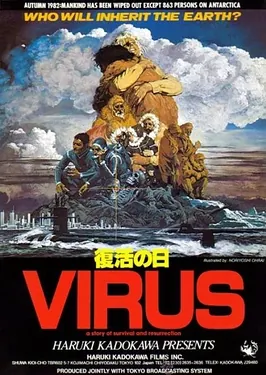

The genetics
The disaster is triggered by a laboratory virus. MM88 was created accidentally by an American geneticist and developed as a biological weapon requested by the US government; it is stolen, smuggled, lost in a plane crash and goes on to wipe out almost all of humanity. The film blames the arms race, secrecy and political cover-up more than an individual scientist: a government scientist who tries to warn the President is locked up, and a military doctrine of automated nuclear retaliation completes the catastrophe. Scientists also appear as rescuers, notably an East German scientist who wants the sample used to develop a vaccine, and Dr. Latour, whose experimental vaccine protects the heroes. The idea of a virus that boosts any other microbe is fictional, but the film's concern with bioweapons, laboratory leaks and pandemics drew renewed attention during the COVID-19 pandemic.
How genetics is portrayed
- Overall portrayal of genetics
- negative A man-made bioweapon causes near-extinction through secrecy and military paranoia; the vaccine-maker is a secondary figure who does not balance the apocalypse.
- Outcome of the genetic intervention
- negative The lab-made virus kills nearly all of humanity; the late vaccine helps only a handful of survivors.
- US government weapons programme (American geneticist)
- villain Aim: military (negative). A geneticist accidentally created MM88, developed as a biological weapon requested by the government, which then imprisons a scientist to hide its theft; the film presents the programme and its cover-up as the cause of extinction.
- American agents who smuggle MM88
- villain Aim: military (negative). They recover the stolen virus by deceiving Dr. Krause, who is killed, and their plane crash releases it.
- Dr. Latour
- hero Aim: benevolent (positive). The Antarctic survivors' scientist develops an experimental vaccine that protects the heroes and, in the Japanese cut, the survivors.
The story
In 1982 American agents recover MM88, a deadly virus created by accident by an American geneticist and stolen from a US laboratory, which amplifies the potency of any other microbe it meets. The plane carrying it crashes in a storm and the virus escapes, causing a pandemic disguised as the 'Italian flu'. Within seven months virtually all of humanity is dead, except 863 people at Antarctic research bases, where the cold keeps the virus inactive. The survivors form a government and begin to rebuild. Then the Japanese seismologist Yoshizumi predicts an earthquake near Washington that will trigger an automatic US nuclear retaliation system, which would in turn trigger the Soviet one, including a strike on Antarctica. Protected by an experimental vaccine, Yoshizumi and Major Carter go to Washington to stop it, but fail. In the Japanese version, Yoshizumi survives and rejoins them years later.